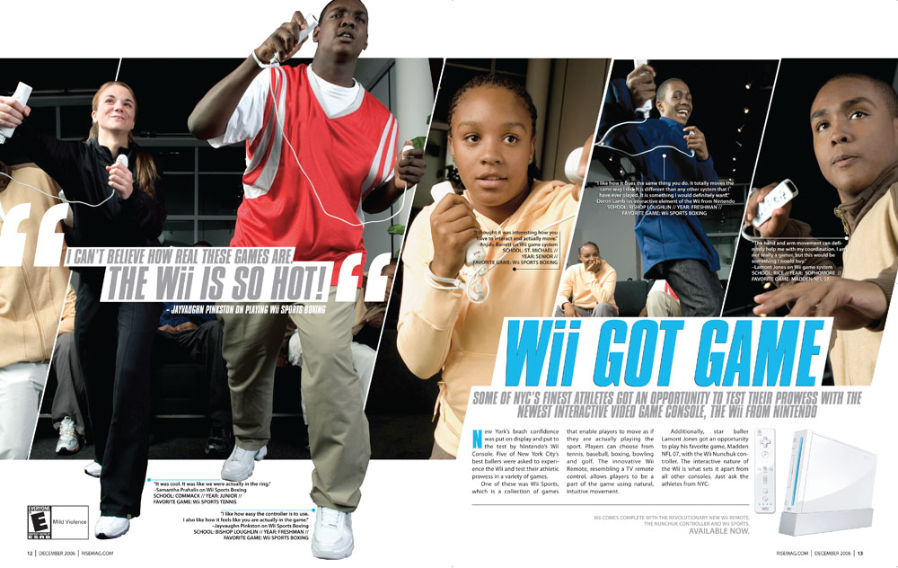

This is a webpage dedicated to the Nintendo Wii, a video game console made and released by Nintendo in 2006.
To this day, the Wii is still regarded as one of the most influential consoles ever made- and one of the most influential things to come out of it's decade!
Most people don't look back too fawnly on it's sort of 'gimmick' that is the Wiimotes usage of motion controls since- for a while in the console's life-span- it wasn't... the greatest... but after the new 'Wii-Motion Plus' technology released, the motion controls were useable
Many people still refer to the Wii for it's visual aesthetics and music found in it's launch titles and the console's own system menus and apps as well!
Trivia: The topic of this site was decided by me looking around my room and seeing I still have my own Wii next to me on my desk
Created by Donovan Edwards for CTI-110: Contact Me